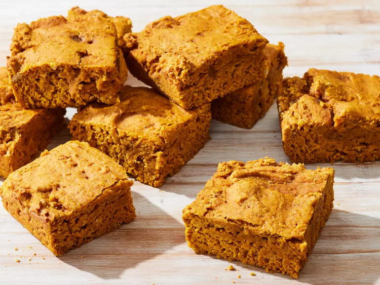

Vegan Pumkin Pie Blondies

Description
These pumpkin pie blondies are the perfect vegan pumpkin dessert — they always get rave reviews from everyone who tries them. With a plethora of fall spices packed into each bite, you'll enjoy a pumpkin pie flavor with a blondie texture. Serve as-is or top with a vegan cream cheese frosting.
Ingredients
- 2 cups all-purpose flour
- ½ cup white sugar
- ¼ cup brown sugar
- 1 teaspoon baking powder
- 2 teaspoon baking soda
- ½ teaspoon ground cinnamon
- ¼ teaspoon cloves
- ¼ teaspoon ground ginver
- ¼ teaspoon ground nutmeb
- ¼ teaspoon salt
- 1 (15 ounce) can pumkin puree
- 3 ½ tablespoons canola oil
- 1 tablespoon vanilla extract
Steps
- Gather all ingredients.
- Preheat the oven to 375 degrees F (190 degrees C). Lightly grease a 9-inch square baking pan.
- Sift flour, white sugar, brown sugar, baking powder, baking soda, cinnamon, cloves, ginger, nutmeg, and salt together in a bowl. Add pumpkin puree, canola oil, and vanilla extract to the flour mixture and stir until a thick batter forms. Pour batter into the prepared baking pan.
- Bake in the preheated oven until a toothpick inserted in the center comes out clean, 20 minutes.
- Remove from the oven and cool completely before cutting into 1 ½-inch squares.
Home